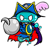
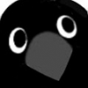
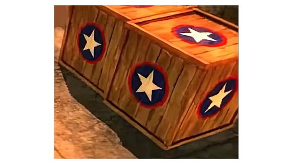
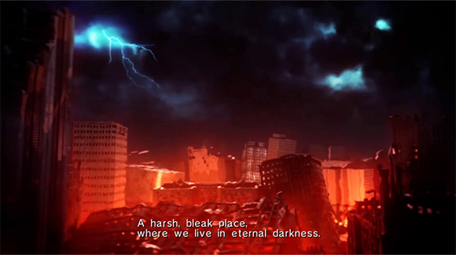
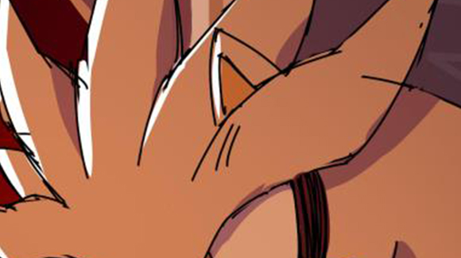

「2022年9月のシルバーイラスト」ができるまで......
ソニックとその仲間たちの、オフショットを描いたTwitterイラストシリーズ「SONIC PICT」。
SONIC PICTは、「ほしの」をボスに、企画の「とよだ」、作画の「からすの」の３人チームで作成しています。
以前は普通にミーティングで進めていた状況がコロナ渦で一変。リモートワークでのチャット会議ツールがメインとなりました。
手の「いいね！」マークは「わかりました！」的な意味合いも含めたチャットツール上でのリアクション。合わせて読んでみてくださいね！
ほしの
ソニックのクリエイティブディレクターにして、このチームのボス。SONIC PICT は、最終的にほしのさんのジャッジで完成！
とよだ
企画。ソニックの設定・テキスト全般の監修担当。SONIC PICT では企画ディレクションとTwitter文面を担当。
からすの
アーティスト。ソニックのアートワークの監修担当。SONIC PICT では作画全般を担当。
「2022年9月のシルバーイラスト」ができるまで......
とよだ
今回のSONIC PICT は、情緒と感傷のあるシルバーのイラストで行きたいと思います。
舞台は「ソニック2006」のあちこちで火の手が上がっている、未来のクライシスシティ。
いつ終わるともしれない日々の戦いを終えたシルバーがビルの陰で焚火をおこして食事をとり、つかの間の休息をとっている。（木のコンテナが壊れたのを燃やしている）
イブリースの災厄への無力感に疲弊して思い詰めてもいるが、 希望を完全には捨てていない。 暗い絵にはせず、シルバーを応援したくなるような一枚にしたいです。
...という所からブレストしていきましょう。
ほしの
いいですね。食事については......ディストピア飯？
ソニックの食物が、「チリドッグ」という楽しく美味しそうなものに対して、殺伐とした未来に生きてきたシルバーは「カロリーバー」とか「水色のペースト」とかだったらコントラストがあって面白いかなと。
とよだ
シルバーの未来飯！
アップルフレーバーのカロリーバー。包装のデザインも木箱とかと同じ「★」とかがあしらってある、ミリメシみたいな物をイメージしました。
からすの
ソニック2006プレイ中は、シルバーってこんな環境で何食べて生きてたんだろう？ って思ってました。
>イブリースの災厄への無力感に疲弊して思い詰めてもいるが、希望を完全には捨てていない。
この感じが伝わると良い雰囲気に仕上がりそうです。
とよだ
背景が夜のクライシスシティであちこち燃えてるんだけど、空の雲の一角がちょっと開いてて星空見えて月がのぞいてるとか...？
後は、シルバーが何に疲れ、頑張ったかが一目でわからないといけないので、何気にここが難しそうですね。2006プレイした人はわかるんだけど。
イブリース倒したキルマーク数を壁に刻んでて、それがもう何百にもなってる...？
からすの
それ良いですね！ 何を数えているのかを伝えるのが難しそうですが、シルバーなりに簡単に描いたイブリースを、傍に配置すれば伝わるでしょうか？
>背景が夜のクライシスシティで、あちこち燃えてるんだけど、空の雲の一角がちょっと開いてて星空見えて月がのぞいてるとか。
原作で見える景色がこんな感じなので、分厚い黒い雲の隙間に雷が見えるくらい悪い天気に振り切っても良い気はします。
過酷な環境であちこち真っ赤に燃えてる中、シルバーの手袋やリングの青い光が映えそうです。
とよだ
そうですね。空模様は原作重視の雷雲でいきましょう。ただ、何かしら絵の中にシチュエーションを明るくする要素は入れたいです。
例えばですけど、ソニックフォースの花一輪みたいな希望のよりどころがあると救われるなあと。何を支えにシルバーは切りの無い戦いを続けているんだろうと。
ほしの
キルマークの横にイブリースの何か描いてるのいいですね。
ただ、キルマークが前に出ると気分が鬱っぽくなりそうなので、何気に見えるくらいの塩梅調整は必要そうです。
からすの
そうですね。キル数表記は壁をよく見ると見える、くらいが良さそうです。
>何を支えにシルバーは切りの無い戦いを続けているんだろうと。
「果てしなく続く荒野、晴れることのない空」という台詞の通りシルバーは生まれたときから世界が終わっていたのに、なぜか空が晴れることを知っているんですよね。
本か何かで空はかつて青かったのだと知っていて、生で見たことは無かったのかなと。（違ったら申し訳ないですが）
青空が書かれた本があれば、それを実際に見ることを希望に戦い続けられるのではと思いますがいかがでしょう？
とよだ
何がしかの「青空」の写真とか本があるの良いですね。「確かにあるんだ」と。
絵本とかだと小物にしてはキャラが立ちすぎに感じるので、この廃墟ロケーションに落ちてた写真とかポスターが良さそうに思います。廃墟の遺物としてボロボロになった雑誌とかがよさそう。
なんか、要素が集まってきた感じしますね。
からすの
かなりラフな状態ですが、ラフスケッチを添付いたしました。
焚火にあたるシルバーがメイン、次点で遠くのイブリースが見えるように構成しました。
厳しい戦いを続けている内容で無傷なのも違和感があるのでは？と思い、包帯を少し巻いたのですがいかがでしょう...？
とよだ
シルバーの包帯は面白いアイデア！
シルバーの表情はそんなにやさぐれてない方がよいかな。もうちょっと希望のニュアンスが欲しく思いました。
あと、絵の印象が思ってたよりだいぶ暗い印象です。もうちょっと「休んでいる」ニュアンスは盛りたく思います。
ほしの
画面が狭く感じたので、焚き火やイブリースなど、こんな感じに要素の位置調整を。
また、床が水平になっていてちょっと構図が硬い印象なので、ちょっとだけパースを付けて空間感を出してみました。
（カメラをちょっと左上に移動するイメージです。窓の形が全部見えるとしたら、左側が大きく右側が小さい台形になるような感じ）
シルバーはもっと股を広げた感じにしたいですね。
つかの間の休息なので、食料を持たせるのが良いかなと思いました。もそもそ食べつつ、物思いに耽るイメージ。
からすの
フィードバックありがとうございます。ざっと色を置いてみましたが、かなり赤色メインの仕上がりになりそうです。
構図についてのフィードバックはまだ反映しておりません。
とよだ
表情、だいぶ和らいでちょうど良くなったかと。色々と思案はしてるんでしょうが、戦闘モードではない感じが出てると思います。
色味は、赤い絵として仕上げても良いとは思いますが、壁側はもっと暗く(青系？）でも良いのかなとも思いました。
ほしの
影色を青系にする感じではどうでしょうか
からすの
構図と色味を調整した下描きを添付いたしました！
とよだ
落ち着いた良い按配に思います。
後は、もうちょっとくつろいでる感じって出ますでしょうか。 前の輪郭線無しの時は炎の照り返しで暖かさを受けている印象があったから、それで休息してる感が出てたのかな。
右手もラフの時の脱力してた指の演技が良いなと思ってたので、本番も採用して欲しいです！
ほしの
そうですね。ホッとひと息、物思いに耽りながら、カロリーバーをボリボリかじる夕食のひととき？
からすの
フィードバックありがとうございます。Pictの清書版を添付いたしました。
とよだ
いいですね！！表情が少し和らいで、一息入れてる感が出たと思います。
下書きの時の輪郭線のラフな感じに加えて、ヨゴシっぽい斜線があったのが、良い感じに疲労感のニュアンスを足してたと思うのですが、それに近いような描写を足すことってできますでしょうか。より「お疲れ様」感が出るかなと思いました。
その他はもう文句なしです！
からすの
汚しの質感を追加いたしました。
とよだ
ありがとう！良いと思います！！
ほしの
バッドフューチャー感に安らぎ感もある、雰囲気あるシルバー絵になったと思います。
9月のシルバーイラスト完成ですね。お疲れさまでした！